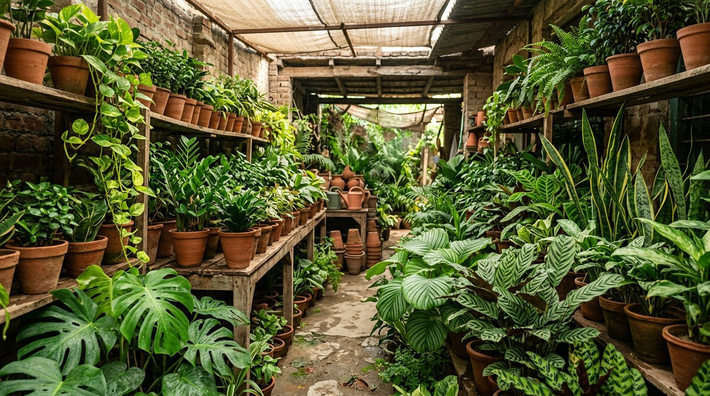
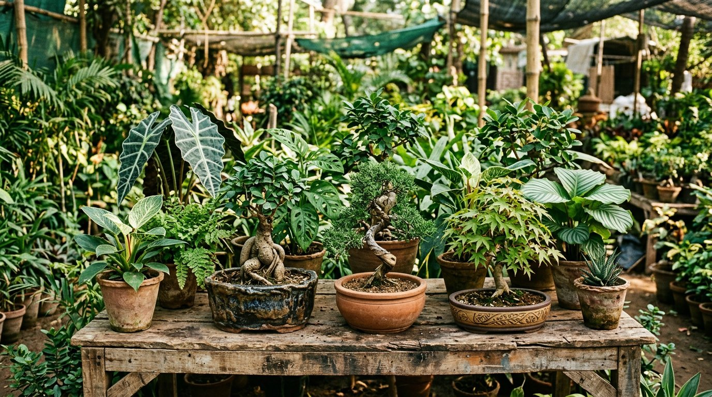

For bright corners, calm rooms and leafy new habits.
01 / Indoor plants
Bring the outside in.
Create a softer, greener feeling at home with foliage plants selected for rooms, porches and everyday living spaces. Explore leaves with texture, height, colour and character.
Ask about indoor plants